没想到经过这么多年的发展，C/C++ 程序的构建过程还是这么繁琐。
如果我们不借助 IDE 工具，很难快速地构建一个新的 C/C++ 程序。如果想要跨平台构建，那就更加麻烦了。MakeFile和Cmake工具用起来又比较繁琐，跨平台构建不够灵活，比较繁琐。
这个时候，发现了Xmake工具，能方便构建C++程序。
Xmake 的基础概念
Xmake 是一个基于 Lua 的轻量级跨平台 C/C++ 构建工具，使用 xmake.lua 维护项目构建。
相比 makefile/CMakeLists.txt，配置语法更加简洁直观，对新手非常友好，短时间内就能快速入门，让用户把更多的精力集中在实际的项目开发上。
虽然简单易用是 xmake 的一大特色，但 xmake 的功能也非常强大。
既能够像 make/ninja 那样直接编译项目，也可以像 cmake/meson 那样生成工程文件，还有内置的包管理系统帮助用户解决 C/C++ 依赖库的集成使用问题。
我们也可以把Xmake理解为
Xmake = Build backend + Project Generator + Package Manager
Xmake 安装和更新
安装Master版本
通常情况下我们只需要通过一键安装脚本即可完成安装。
使用curl
bash <(curl -fsSL https://raw.githubusercontent.com/tboox/xmake/master/scripts/get.sh)
使用wget
bash <(wget https://raw.githubusercontent.com/tboox/xmake/master/scripts/get.sh -O -)
使用powershell
Invoke-Expression (Invoke-Webrequest 'https://raw.githubusercontent.com/tboox/xmake/master/scripts/get.ps1' -UseBasicParsing).Content
注：如果ps脚本执行提示失败，可以尝试在管理员模式下执行
安装Windows版本
使用安装包
windows下提供了预制的nsis安装包，我们可直接从github的Releases下载页面下载后，运行安装包即可。
- 从 Releases 上下载windows安装包
- 运行安装程序 xmake-[version].exe
使用scoop
scoop install xmake
MacOS
使用Homebrew
brew install xmake
使用安装包
- 从 Releases 上下载pkg安装包
- 双击运行
安装master版本
# 使用homebrew安装master版本
$ brew install xmake --HEAD
# 或者直接调用shell下载安装
$ bash <(curl -fsSL https://raw.githubusercontent.com/tboox/xmake/master/scripts/get.sh)
Linux
archlinux上安装：
$ yaourt xmake
下载deb包
- 从 Releases 上下载deb安装包
- 运行:
dpkg -i xmake-xxxx.deb
更新升级
从v2.2.3版本开始，新增了xmake update命令，来快速进行自我更新和升级，默认是升级到最新版本，当然也可以指定升级或者回退到某个版本：
$ xmake update 2.2.4
也可以指定更新到master/dev分支版本：
$ xmake update master
$ xmake update dev
从指定git源更新
$ xmake update github:xmake-io/xmake#master
$ xmake update gitee:tboox/xmake#dev # gitee镜像
卸载
xmake update --uninstall
创建和编译工程
创建空工程
xmake提供了xmake create命令，可以很方便的快速创建基于c/c++, swift, objc等各种语言的空工程项目，比如：
$ xmake create test
create test ...
[+]: xmake.lua
[+]: src/main.cpp
[+]: .gitignore
create ok!
默认会创建一个c++的hello world工程，根目录下会生成一个xmake.lua用于描述项目的构建规则。
add_rules("mode.debug", "mode.release")
target("test")
set_kind("binary")
add_files("src/*.cpp")
这是一个非常简单的xmake.lua描述，target("test")定义了一个子工程模块test，每个target会生成一个对应的目标文件，此处的binary类型，指定创建一个最基础的可执行文件。
而最上面的mode.debug和mode.release规则设置，是可选设置，但是通常我们都会建议加上，这样默认就可以生效两种常用的构建模式：debug和release
执行编译
通常我们如果只是编译当前主机环境的可执行文件，只需要执行xmake这个命令就可以了：
$ xmake
checking for the Xcode directory ... /Applications/Xcode.app
checking for the SDK version of Xcode ... 10.15
[ 0%]: ccache compiling.release src/main.cpp
[100%]: linking.release test
xmake默认会检测当前环境已存在的构建环境，比如笔者当前的xcode环境，然后默认采用release模式编译，如果设置了mode.release规则，那么就会生效。
编译模式切换
如果我们要切到mode.debug编译，只需要：
$ xmake f -m debug
$ xmake
其中，xmake f是xmake config命令的简写，用来快速的切换配置，如果上手之后，通常采用简写会更加方便，更多命令的简写，都可执行xmake --help查看。
创建其他模板工程
xmake create还可以用来创建各种其他类型的工程项目，我们可以敲xmake create --help看下：
$ xmake create --help
Usage: $xmake create [options] [target]
Create a new project.
Options:
-l LANGUAGE, --language=LANGUAGE The project language (default: c++)
- c++
- go
- dlang
- cuda
- rust
- swift
- objc
- c
- objc++
-t TEMPLATE, --template=TEMPLATE Select the project template id or name of the given language.
(default: console)
- console: c++, go, dlang, cuda, rust, swift, objc, c, objc++
- qt.console: c++
- qt.quickapp: c++
- qt.quickapp_static: c++
- qt.shared: c++
- qt.static: c++
- qt.widgetapp: c++
- qt.widgetapp_static: c++
- shared: c++, dlang, cuda, c
- static: c++, go, dlang, cuda, rust, c
- tbox.console: c++, c
- tbox.shared: c++, c
- tbox.static: c++, c
target Create the given target.
Uses the project name as target if not exists.
可以通过-l/--language来指定工程语言，而-t/--template用来指定闯将的工程模板类型。
比如，我们创建一个基于c的静态库项目：
$ xmake create -l c -t static test
create test ...
[+]: xmake.lua
[+]: src/interface.c
[+]: src/interface.h
[+]: src/test.c
[+]: src/main.cpp
[+]: .gitignore
create ok!
运行和调试目标程序
运行生成目标
xmake也提供了run命令，直接运行生成后的可执行文件，用于方便快速的进行测试，例如：
$ xmake run
hello xmake!
添加运行环境变量
我们也可以在xmake.lua中通过add_runenvs接口来添加设置默认运行target程序的环境变量。
所以，对于PATH这种，通过此接口追加值是非常方便的，而且此接口支持多值设置，所以通常就是用来设置带有path sep的多值env。
target("test")
set_kind("binary")
add_files("src/*.c")
add_runenvs("PATH", "/tmp/bin", "xxx/bin")
add_runenvs("LD_LIBRARY_PATH", "/tmp/lib", "xxx/lib")
自定义运行逻辑
如果单纯的环境设置，以及默认的加载运行规则不满足需求，我们可以通过定制化on_run脚本，实现更加复杂的运行逻辑：
例如，运行安装好的apk程序：
target("test")
-- ...
-- 设置自定义运行脚本，自动运行安装好的app程序，并且自动获取设备输出信息
on_run(function (target)
os.run("adb shell am start -n com.demo/com.demo.DemoTest")
os.run("adb logcat")
end)
调试程序
命令行调试
我们也可以传递-d参数，调用gdb/lldb等调试器程序，加载目标文件进行调试：
$ xmake run -d
xmake将会使用系统自带的调试器去加载程序运行，目前支持：lldb, gdb, windbg, vsjitdebugger, ollydbg 等各种调试器。
使用vscode进行断点调试
我们还可以通过xmake-vscode插件配合vscode来实现对c/c++项目的断点调试支持。
另外我们还需要依赖vscode的C++插件才能进行调试支持，不过由于开发c/c++程序，这个插件几乎是必需，所以并没有太大问题。
就算没有安装此插件，xmake-vscode也会加载lldb/gdb/vsjitdebugger等系统调试器，直接加载调试。
常用C/C++项目描述设置详解
一行描述即可编译src目录下所有c源文件，然后生成一个名为demo的可执行文件。
target("demo", {kind = "binary", files = "src/*.c"})
上面的写法是精简写法，通常我们更推荐使用下面展开式写法：
target("demo")
set_kind("binary")
add_files("src/*.c")
这两者完全等价，如果配置很简短，可以完全精简成一行，而拆分成多行更加方便灵活配置。
配置项目目标类型
通常的C/C++项目生成的目标文件猪油三大类：可执行程序，静态库，动态库。
我们可以通过set_kind()配置来设置，分别对应：binary, static, shared
例如，我们想要编译动态库，只需要修改kind：
target("demo")
set_kind("shared")
add_files("src/*.c")
添加宏定义
编译宏的设置，大多数c/c++项目都会用到，一般如果我们设置编译flags传给gcc/clang，都是要配置：-DXXX
而在xmake里面，提供了add_defines()内置接口来配置：
target("demo")
set_kind("shared")
add_files("src/*.c")
add_defines("XXX")
条件配置
那如果我们想在不同编译平台，分别设置不同的宏开关呢？我们可以利用lua内置的if语句很方便的实现：
target("demo")
set_kind("shared")
add_files("src/*.c")
add_defines("XXX")
if is_plat("linux", "macosx") then
add_defines("YYY")
end
我们通过is_plat()判断，如果当前编译目标平台是linux或者macosx，那么target会额外增加-DYYY宏定义。
全局配置
我们在target("demo")下面的所有配置，都属于demo这个target子域，并不是全局的，所以你会看到通常配置上都加了缩进，就是为了凸显作用域的影响范围。
通常如果多个target连续定义，下一个target定义就会自动结束上个target的作用域，每个target的配置完全独立，互不干扰：
target("test1")
set_kind("shared")
add_files("src/*.c")
add_defines("TEST1")
target("test2")
set_kind("shared")
add_files("src/*.c")
add_defines("TEST2")
例如，上面的配置两个target，各自拥有自己独立的宏定义：TEST1和TEST2。
那么，我们要对这两个target，设置共用的宏定义，应该如何配置呢？
每个target下面都配置一遍add_defines("TEST")? 当然可以，不过这样就有点冗余了，配置多了就会很难维护，其实我们只需要放置到全局根作用域就行了：
-- 全局设置
add_defines("TEST")
if is_arch("arm64", "armv7") then
add_defines("ARM")
end
target("test1")
set_kind("shared")
add_files("src/*.c")
add_defines("TEST1")
target("test2")
set_kind("shared")
add_files("src/*.c")
add_defines("TEST2")
在target的外层的所有配置都属于全局配置，我们也可以调用target_end()强制结束target子域，切回全局作用域：
target("test1")
set_kind("shared")
add_files("src/*.c")
add_defines("TEST1")
target_end()
-- 全局设置
add_defines("TEST")
if is_arch("arm64", "armv7") then
add_defines("ARM")
end
target("test2")
set_kind("shared")
add_files("src/*.c")
add_defines("TEST2")
target_end()
添加编译选项
如果有些编译选项，xmake没有提供内置api设置，那么我们可以退化到add_cflags, add_cxflags, add_cxxflags来设置， 不过这就需要用户自己去判断编译平台了，因为并不是所有编译flags每个平台都支持。
比如：
add_cflags("-g", "-O2", "-DDEBUG")
if is_plat("windows") then
add_cflags("/MT")
end
所有选项值都基于gcc的定义为标准，如果其他编译器不兼容（例如：vc），xmake会自动内部将其转换成对应编译器支持的选项值。
用户无需操心其兼容性，如果其他编译器没有对应的匹配值，那么xmake会自动忽略器设置。
我们也可以通过force参数来强制禁用flags的自动检测，直接传入编译器，哪怕编译器有可能不支持，也会设置：
add_cflags("-g", "-O2", {force = true})
那如何知道，哪些flags检测失败给忽略了呢，带-v编译就可以看到，比如：
$ xmake -v
checking for the /usr/bin/xcrun -sdk macosx clang ... ok
checking for the flags (-Oz) ... ok
checking for the flags (-Wno-error=deprecated-declarations) ... ok
checking for the flags (-fno-strict-aliasing) ... ok
checking for the flags (-Wno-error=expansion-to-defined) ... no
最后备注下这三个api的区别：
add_cflags：仅添加C代码相关编译flagsadd_cxflags：添加C/C++代码相关编译flagsadd_cxxflags：仅添加C++代码相关编译flags
添加库相关设置
一个C/C++库的集成使用，通常需要设置头文件搜索目录，链接库名，库搜索目录，比如：
target("test")
set_kind("binary")
add_links("pthread")
add_includedirs("/usr/local/include")
add_linkdirs("/usr/local/lib")
通常，为了保证链接库的依赖顺序，系统库链接通常都会比较靠后，我们通过add_syslinks()来专门设置系统库链接，而add_links()通常用于非系统库链接：
target("test")
set_kind("binary")
add_links("A", "B")
add_syslinks("pthread")
上面的配置，我们添加了两个第三方链接库：A, B，以及系统库pthread，整个完整的链接顺序是：-lA -lB -lpthread，syslinks会放在最后面。
如果你不确定实际的链接顺序，我们可以执行xmake -v编译，查看完整的链接参数命令行。
设置语言标准
c标准和c++标准可同时进行设置，例如：
-- 设置c代码标准：c99， c++代码标准：c++11
set_languages("c99", "c++11")
注：并不是设置了指定的标准，编译器就一定会按这个标准来编译，毕竟每个编译器支持的力度不一样，但是xmake会尽最大可能的去适配当前编译工具的支持标准。
例如：windows下vs的编译器并不支持按c99的标准来编译c代码，只能支持到c89，但是xmake为了尽可能的支持它，所以在设置c99的标准后，xmake会强制按c++代码模式去编译c代码，从一定程度上解决了windows下编译c99的c代码问题。
设置编译优化
xmake提供了几种内置的编译优化配置：none, fast, faster, fastest, smallest, aggressive，来实现各种级别的编译优化。
set_optimize("fastest")
如果用户通过flags来设置，还需额外考虑不同编译器的不同编译选项，xmake对其进行了内部映射处理，极大程度方便用户提供跨平台性。
如果想查看详细的映射规则，可以到xmake的官方文档进行查看：编译优化设置
调试和发布模式
即使xmake提供了set_optimize简化了不同编译器的复杂配置，但是对于不同的编译模式: debug/release，还是要自己做一些繁琐的判断和配置：
if is_mode("debug") then
set_symbols("debug")
set_optimize("none")
end
if is_mode("release") then
set_symbols("hidden")
set_strip("all")
if is_plat("iphoneos", "android") then
set_optimize("smallest")
else
set_optimize("fastest")
end
end
这些看似常用的设置，如果每个项目都来一遍，那也很繁琐了，导致xmake.lua不够精简可读，因此xmake提供了一些常用内置规则来简化设置：
只需这一行即可，效果是完全一致，用户还可以基于此在做一些额外的定制化配置来改写：
add_rules("mode.release", "mode.debug")
if is_mode("release") then
set_optimize("fastest")
end
比如我想在release模式下，强制启用fastest编译优化，既然有了模式配置，那我们怎么切换到debug模式编译呢？（默认是release编译）
xmake f -m debug;
xmake
添加源文件
最后，我们在介绍下xmake最常用，也最为强大的设置之一，也就是对编译源文件的配置管理：add_files()。
我们可以用这个接口，添加各类xmake支持的源文件，比如：c/c++, asm, objc, swift, go, dlang等源文件，甚至是：.obj, .a/.lib等二进制对象和库文件。
例如：
add_files("src/test_*.c")
add_files("src/xxx/**.cpp")
add_files("src/asm/*.S", "src/objc/**/hello.m")
其中通配符*表示匹配当前目录下文件，而**则匹配多级目录下的文件。
add_files的使用其实是相当灵活方便的，其匹配模式借鉴了premake的风格，但是又对其进行了改善和增强。
使得不仅可以匹配文件，还有可以在添加文件同时，过滤排除指定模式的一批文件。
-- 递归添加src下的所有c文件，但是不包括src/impl/下的所有c文件
add_files("src/**.c|impl/*.c")
-- 添加src下的所有cpp文件，但是不包括src/test.cpp、src/hello.cpp以及src下所有带xx_前缀的cpp文件
add_files("src/*.cpp|test.cpp|hello.cpp|xx_*.cpp")
其中分隔符|之后的都是需要排除的文件，这些文件也同样支持匹配模式，并且可以同时添加多个过滤模式，只要中间用|分割就行了。
添加文件的时候支持过滤一些文件的一个好处就是，可以为后续根据不同开关逻辑添加文件提供基础。
注：为了使得描述上更加的精简，|之后的过滤描述都是基于起一个模式：src/*.cpp 中 * 之前的目录为基础的。
所以上面的例子后面过滤的都是在src下的文件，这个是要注意的。
target("test")
add_defines("TEST1")
add_files("src/*.c")
add_files("test/*.c", "test2/test2.c", {defines = "TEST2", languages = "c99", includedirs = ".", cflags = "-O0"})
可以在add_files的最后一个参数，传入一个配置table，去控制指定files的编译选项，里面的配置参数跟target的一致，并且这些文件还会继承target的通用配置-DTEST1。
支持添加未知的代码文件，通过设置rule自定义规则，实现这些文件的自定义构建
target("test")
-- ...
add_files("src/test/*.md", {rule = "markdown"})
可以通过force参数来强制禁用cxflags,cflags等编译选项的自动检测，直接传入编译器，哪怕编译器有可能不支持，也会设置：
add_files("src/*.c", {force = {cxflags = "-DTEST", mflags = "-framework xxx"}})
删除指定源文件
既然讲到了添加源文件，那么如何删除，我们也顺带着讲下吧，我们只需要通过del_files()接口，就可以从前面add_files接口添加的文件列表中，删除指定的文件，例如：
target("test")
add_files("src/*.c")
del_files("src/test.c")
上面的例子，可以从src目录下添加除test.c以外的所有文件，当然这个也可以通过add_files("src/*.c|test.c")来达到相同的目的，但是这种方式更加灵活。
例如，我们可以条件判断来控制删除哪些文件，并且此接口也支持add_files的匹配模式，过滤模式，进行批量移除。
target("test")
add_files("src/**.c")
del_files("src/test*.c")
del_files("src/subdir/*.c|xxx.c")
if is_plat("iphoneos") then
add_files("xxx.m")
end
通过上面的例子，我们可以看出add_files和del_files是根据调用顺序，进行顺序添加和删除的，并且通过del_files("src/subdir/*.c|xxx.c")删除一批文件，
并且排除src/subdir/xxx.c（就是说，不删除这个文件）。
Android平台编译详解
准备工作
首先，我们需要先准备好编译android native库必须的ndk工具链，如果还没有可以从官网下载解压即可：Android NDK
如果是为了获取更好的向下兼容性，可以选择r16版本，因为这个是最后一个支持armeabi的版本，如果没什么特别需求，可以直接下载最新版。
NDK集成和编译
手动配置NDK
我们只需要将解压后ndk目录路径传递给xmake完成配置，可以直接编译了，例如：
$ xmake f -p android --ndk=~/downloads/android-ndk-r19c
$ xmake
其中，-p android 用于切换到android平台，因为如果不指定平台，默认会编译当前主机平台的target程序。
通常，如果没特殊需求，上面的配置就可以完成android native程序的编译，目前xmake内置支持：binary, static, shared这三种基础target类型文件的生成，分别对应可执行程序，.a静态库，.so动态库。
NDK路径的全局配置
xmake f/config命令仅仅是针对当前项目的配置，如果经常跨平台编译和配置切换都要重新设置一遍ndk路径，那么还是稍显繁琐。
我们可以通过xmake g/global全局配置命令来设置它，确保永久生效。
$ xmake g --ndk=~/xxx/android-ndk-r19c
我们也可以通过设置ANDROID_NDK_HOME全局环境变量来确保永久生效，这跟上述命令配置的效果是差不多的。
NDK路径的自动探测
通常情况下即使没有配置ndk路径，xmake还是会尝试默认检测一些常用路径，比如在macos下会自动探测是否存在以下路径：
~/Library/Android/sdk/ndk-bundle
这是mac下装完android studio自动创建的sdk目录，以及ndk的常用放置路径。
或者尝试从ANDROID_NDK_HOME这种环境变量中探测，如果存在的话。
如果能探测到，也就没必要再额外手动配置了。
C++ STL库配置切换
首先，我们先来介绍下，ndk提供的三种stl库版本
- stlport：早期ndk内置的stl库，现在基本已废弃
- gnustl：ndk r16b之前主要使用的stl库，但是自从r16b之后，也已经被google去掉了
- llvm-c++：r16b之后较新的ndk内置的stl库
因此，我们在编译android库的时候，需要根据自己的需求，选用stl，以及选用合适的ndk版本，而xmake通常会尽可能默认使用llvm-c++库，如果发现当前ndk版本比较老，会尝试退化到gnustl上去。
用户也可以手动修改stl库的版本，例如：
$ xmake f -p android --ndk=xxxx --ndk_cxxstl=gnustl_shared
具体，关于ndk_cxxstl选项的配置值，可以敲help查看，xmake f --help，主要就是：
- llvmstl_static
- llvmstl_shared
- gnustl_static
- gnustl_shared
- stlport_static
- stlport_shared
API版本设置
如果在编译过程中，报出一些libc库符号找不到，通常有可能是api版本没设置对，因为有些libc函数，只有在高版本api下才存在。
这个时候，我们可以通过尝试手动修改api版本来解决：
$ xmake f -p android --ndk=xxx --ndk_sdkver=16
arch的编译切换
目前xmake提供 armv7-a, arm64-v8a, armv5te, mips, mips64, i386,x86_64这些架构的配置编译，如果没有指定arch，那么默认会使用armv7架构。
手动修改arch方式如下：
$ xmake f -p android --ndk=xxx -a arm64-v8a
Android相关配置设置
如果项目中需要配置一些只有android平台才有的编译设置，比如添加特定宏开关，链接库等，可以在xmake.lua中，通过is_plat("android")来判断处理。
target("test")
set_kind("shared")
add_files("src/*.c")
if is_plat("android") then
add_defines("ANDROID")
add_syslinks("log")
end
切换编译模式
调试和发布模式
通常，如果我们是通过xmake create命令创建的项目，会在xmake.lua里面自动添加一行编译规则的配置，如下：
add_rules("mode.release", "mode.debug")
target("hello")
set_kind("binary")
add_files("src/*.c")
通过add_rules接口，我们默认添加了release和debug两个常用的内置规则，它们会在编译的时候附带上对应模式相关的一些编译flags，来开启优化用于发布或者调试编译。
如果仅仅执行了xmake命令，没有额外的配置，那么默认就会是release编译，等价于：
$ xmake f -m release
$ xmake
[ 0%]: ccache compiling.release src/main.cpp
[100%]: linking.release test
build ok!
如果我们要切换到debug编译模式，只需要：
$ xmake f -m debug
$ xmake
[ 0%]: ccache compiling.debug src/main.cpp
[100%]: linking.debug test
build ok!
上面的-m/--mode=参数就是用来设置编译模式，会跟mode.release和mode.debug这两个规则做关联。
那么，他们是如何关联上的呢？我们可以先来看下这两个规则的内部实现：
rule("mode.debug")
after_load(function (target)
if is_mode("debug") then
if not target:get("symbols") then
target:set("symbols", "debug")
end
if not target:get("optimize") then
target:set("optimize", "none")
end
end
end)
rule("mode.release")
after_load(function (target)
if is_mode("release") then
if not target:get("symbols") and target:targetkind() ~= "shared" then
target:set("symbols", "hidden")
end
if not target:get("optimize") then
if is_plat("android", "iphoneos") then
target:set("optimize", "smallest")
else
target:set("optimize", "fastest")
end
end
if not target:get("strip") then
target:set("strip", "all")
end
end
end)
可以看到，在target被加载阶段，xmake会去判断用户对xmake f --mode=xxx的参数配置，如果通过is_mode()接口获取到是debug模式，那么会禁用相关优化并且启用符号输出。
而如果是release模式，那么会开启编译优化并且strip掉所有调试符号。
定制化的模式配置
当然，内置的这两规则默认设置的这些编译配置，只能满足大部分场景的常规需求，如果用户想要在不同的编译模式下定制化一些个人的编译配置，那么需要自己在xmake.lua做判断。
例如，我们想在release下也启用调试符号，那么只需要：
if is_mode("release") then
set_symbols("debug")
end
或者额外增加一些编译flags：
if is_mode("release") then
add_cflags("-fomit-frame-pointer")
end
注：如果用户自己的配置和mode.release内置的配置冲突，会优先使用用户的设置。
当然，我们也可以完全不去通过add_rules("mode.debug", "mode.release")添加默认的配置规则，让用户完全自己控制模式配置：
-- 如果当前编译模式是debug
if is_mode("debug") then
-- 添加DEBUG编译宏
add_defines("DEBUG")
-- 启用调试符号
set_symbols("debug")
-- 禁用优化
set_optimize("none")
end
-- 如果是release或者profile模式
if is_mode("release", "profile") then
-- 如果是release模式
if is_mode("release") then
-- 隐藏符号
set_symbols("hidden")
-- strip所有符号
set_strip("all")
-- 忽略帧指针
add_cxflags("-fomit-frame-pointer")
add_mxflags("-fomit-frame-pointer")
-- 如果是profile模式
else
-- 启用调试符号
set_symbols("debug")
end
-- 添加扩展指令集
add_vectorexts("sse2", "sse3", "ssse3", "mmx")
end
其他内置模式规则
通过上文的例子，我们看到除了debug/release模式，还加了个profile模式的配置判断，其实xmake也提供了对应的内置模式，还有哪些，我们具体来看下：
mode.debug
为当前工程xmake.lua添加debug编译模式的配置规则，例如：
add_rules("mode.debug")
相当于：
if is_mode("debug") then
set_symbols("debug")
set_optimize("none")
end
我们可以通过：xmake f -m debug来切换到此编译模式。
mode.release
为当前工程xmake.lua添加release编译模式的配置规则，例如：
add_rules("mode.release")
相当于：
if is_mode("release") then
set_symbols("hidden")
set_optimize("fastest")
set_strip("all")
end
我们可以通过：xmake f -m release来切换到此编译模式。
mode.check
为当前工程xmake.lua添加check编译模式的配置规则，一般用于内存检测，例如：
add_rules("mode.check")
相当于：
if is_mode("check") then
set_symbols("debug")
set_optimize("none")
add_cxflags("-fsanitize=address", "-ftrapv")
add_mxflags("-fsanitize=address", "-ftrapv")
add_ldflags("-fsanitize=address")
end
我们可以通过：xmake f -m check来切换到此编译模式。
mode.profile
为当前工程xmake.lua添加profile编译模式的配置规则，一般用于性能分析，例如：
add_rules("mode.profile")
相当于：
if is_mode("profile") then
set_symbols("debug")
add_cxflags("-pg")
add_ldflags("-pg")
end
我们可以通过：xmake f -m profile来切换到此编译模式。
mode.coverage
为当前工程xmake.lua添加coverage编译模式的配置规则，一般用于覆盖分析，例如：
add_rules("mode.coverage")
相当于：
if is_mode("coverage") then
add_cxflags("--coverage")
add_mxflags("--coverage")
add_ldflags("--coverage")
end
我们可以通过：xmake f -m coverage来切换到此编译模式。
注：生成的gcno文件一般都是个obj所在目录对应的哦，因此需要从build目录下去找。
扩展自己的编译模式
xmake的模式配置，并没有固定值，用户可以随意传入和配置，只要xmake f -m/--mode=xxx传入的模式值和xmake.lua里面的is_mode("xxx")能对应上就行。
比如，我们设置了一个自己独有的编译模式my_mode，可以直接在命令行配置切换；
$ xmake f -m my_mode
$ xmake
[ 0%]: ccache compiling.my_mode src/main.cpp
[100%]: linking.my_mode test
build ok!
然后xmake.lua里面对相应的值进行判断即可：
if is_mode("my_mode") then
add_defines("ENABLE_MY_MODE")
end
使用模式变量
我们也可以直接在配置值中传递模式变量$(mode)，比如根据不同模式选择链接不同的库：
target("test")
set_kind("binary")
add_files("src/*.c")
add_links("xxx_$(mode)")
上面的配置，如果是调试模式编译就会选择链接：libxxx_debug.a库，而release下就会链接libxxx_release.a，当然，我们也可以设置到库搜索路径中，根据目录来选择对应的库。
target("test")
set_kind("binary")
add_files("src/*.c")
add_linkdirs("lib/$(mode)")
add_links("xxx")
另外，我们可以通过get_config("mode")直接获取到传入的模式配置值，并且这几种获取方式，在自定义脚本也是同样有效的哦，例如：
target("test")
set_kind("binary")
add_files("src/*.c")
on_load(function (target)
if is_mode("release") then
print(get_config("mode"), "$(mode)")
end
end)
交叉编译详解
交叉编译工具链简介
通常，如果我们需要在当前pc环境编译生成其他设备上才能运行的目标文件时候，就需要通过对应的交叉编译工具链来编译生成它们，比如在win/macos上编译linux的程序，或者在linux上编译其他嵌入式设备的目标文件等。
通常的交叉编译工具链都是基于gcc/clang的，大都具有类似如下的结构：
/home/toolchains_sdkdir
- bin
- arm-linux-armeabi-gcc
- arm-linux-armeabi-ld
- ...
- lib
- libxxx.a
- include
- xxx.h
每个工具链都有对应的include/lib目录，用于放置一些系统库和头文件，例如libc, stdc++等，而bin目录下放置的就是编译工具链一系列工具。例如：
arm-linux-armeabi-ar
arm-linux-armeabi-as
arm-linux-armeabi-c++
arm-linux-armeabi-cpp
arm-linux-armeabi-g++
arm-linux-armeabi-gcc
arm-linux-armeabi-ld
arm-linux-armeabi-nm
arm-linux-armeabi-strip
其中arm-linux-armeabi-前缀就是cross，通过用来标示目标平台和架构，主要用于跟主机自身的gcc/clang进行区分。
里面的gcc/g++就是c/c++的编译器，通常也可以作为链接器使用，链接的时候内部会去调用ld来链接，并且自动追加一些c++库。
cpp是预处理器，as是汇编器，ar用于生成静态库，strip用于裁剪掉一些符号信息，使得目标程序会更加的小。nm用于查看导出符号列表。
自动探测和编译
如果我们的交叉编译工具链是上文的结构，xmake会自动检测识别这个sdk的结构，提取里面的cross，以及include/lib路径位置，用户通常不需要做额外的参数设置，只需要配置好sdk根目录就可以编译了，例如：
$ xmake f -p cross --sdk=/home/toolchains_sdkdir
$ xmake
其中，-p cross用于指定当前的平台是交叉编译平台，--sdk=用于指定交叉工具链的根目录。
注：我们也可以指定-p linux平台来配置交叉编译，效果是一样的，唯一的区别是额外标识了linux平台名，方便xmake.lua里面通过is_plat("linux")来判断平台。
这个时候，xmake会去自动探测gcc等编译器的前缀名cross：arm-linux-armeabi-，并且编译的时候，也会自动加上链接库和头文件的搜索选项，例如：
-I/home/toolchains_sdkdir/include
-L/home/toolchains_sdkdir/lib
这些都是xmake自动处理的，不需要手动配置他们。
手动配置编译
如果上面的自动检测对某些工具链，还无法完全通过编译，就需要用户自己手动设置一些交叉编译相关的配置参数，来调整适应这些特殊的工具链了，下面我会逐一讲解如何配置。
设置工具链bin目录
对于不规则工具链目录结构，靠单纯地--sdk选项设置，没法完全检测通过的情况下，可以通过这个选项继续附加设置工具链的bin目录位置。
例如：一些特殊的交叉工具链的，编译器bin目录，并不在 /home/toolchains_sdkdir/bin 这个位置，而是独立到了 /usr/opt/bin
这个时候，我们可以在设置了sdk参数的基础上追加bin目录的参数设置，来调整工具链的bin目录。
$ xmake f -p linux --sdk=/home/toolchains_sdkdir --bin=/usr/opt/bin
$ xmake
设置交叉工具链工具前缀
像aarch64-linux-android-这种，通常如果你配置了--sdk或者--bin的情况下，xmake会去自动检测的，不需要自己手动设置。
但是对于一些极特殊的工具链，一个目录下同时有多个cross前缀的工具bin混在一起的情况，你需要手动设置这个配置，来区分到底需要选用哪个bin。
例如，toolchains的bin目录下同时存在两个不同的编译器：
/opt/bin
- armv7-linux-gcc
- aarch64-linux-gcc
我们现在想要选用armv7的版本，那么我们可以追加--cross=配置编译工具前缀名，例如：
$ xmake f -p linux --sdk=/usr/toolsdk --bin=/opt/bin --cross=armv7-linux-
设置c/c++编译器
如果还要继续细分选择编译器，则继续追加相关编译器选项，例如：
$ xmake f -p linux --sdk=/user/toolsdk --cc=armv7-linux-clang --cxx=armv7-linux-clang++
当然，我们也可以指定编译器全路径。
--cc用于指定c编译器名，--cxx用于指定c++编译器名。
注：如果存在CC/CXX环境变量的话，会优先使用当前环境变量中指定的值。
如果指定的编译器名不是那些xmake内置可识别的名字（带有gcc, clang等字样），那么编译器工具检测就会失败。
这个时候我们可以通过：
xmake f --cxx=clang++@/home/xxx/c++mips.exe
复制代码设置c++mips.exe编译器作为类clang++的使用方式来编译。
也就是说，在指定编译器为c++mips.exe的同时，告诉xmake，它跟clang++用法和参数选项基本相同。
设置c/c++连接器
如果还要继续细分选择链接器，则继续追加相关链接器选项，例如：
$ xmake f -p linux --sdk=/user/toolsdk --ld=armv7-linux-clang++ --sh=armv7-linux-clang++ --ar=armv7-linux-ar
ld指定可执行程序链接器，sh指定共享库程序链接器，ar指定生成静态库的归档器。
注：如果存在LD/SH/AR环境变量的话，会优先使用当前环境变量中指定的值。
设置头文件和库搜索目录
如果sdk里面还有额外的其他include/lib目录不在标准的结构中，导致交叉编译找不到库和头文件，那么我们可以通过--includedirs和--linkdirs来追加搜索路径，然后通过--links添加额外的链接库。
$ xmake f -p linux --sdk=/usr/toolsdk --includedirs=/usr/toolsdk/xxx/include --linkdirs=/usr/toolsdk/xxx/lib --links=pthread
注：如果要指定多个搜索目录，可以通过
:或者;来分割，也就是不同主机平台的路径分隔符，linux/macos下用:，win下用;。
设置编译和链接选项
我们也可以根据实际情况通过--cflags, --cxxflags，--ldflags，--shflags和 --arflags额外配置一些编译和链接选项。
- cflags: 指定c编译参数
- cxxflags：指定c++编译参数
- cxflags: 指定c/c++编译参数
- asflags: 指定汇编器编译参数
- ldflags: 指定可执行程序链接参数
- shflags: 指定动态库程序链接参数
- arflags: 指定静态库的生成参数
例如：
$ xmake f -p linux --sdk=/usr/toolsdk --cflags="-DTEST -I/xxx/xxx" --ldflags="-lpthread"
mingw工具链
使用mingw工具链编译，其实也是交叉编译，但是由于这个比较常用，xmake专门增加了一个mingw的平台来快速处理使用mingw工具链的编译。
因此，xmake对mingw的工具链检测会更加完善，在macos下，基本上连sdk路径都不需要配置，也能直接检测到，只需要切到mingw平台编译即可。
$ xmake f -p mingw
$ xmake -v
configure
{
ld = /usr/local/opt/mingw-w64/bin/x86_64-w64-mingw32-g++
ndk_stdcxx = true
plat = mingw
mingw = /usr/local/opt/mingw-w64
buildir = build
arch = x86_64
xcode = /Applications/Xcode.app
mode = release
cxx = /usr/local/opt/mingw-w64/bin/x86_64-w64-mingw32-gcc
cross = x86_64-w64-mingw32-
theme = default
kind = static
ccache = true
host = macosx
clean = true
bin = /usr/local/opt/mingw-w64/bin
}
[ 0%]: ccache compiling.release src/main.cpp
/usr/local/bin/ccache /usr/local/opt/mingw-w64/bin/x86_64-w64-mingw32-gcc -c -fvisibility=hidden -O3 -m64 -o build/.objs/test/mingw/x86_64/release/src/main.cpp.obj src/main.cpp
[100%]: linking.release test.exe
/usr/local/opt/mingw-w64/bin/x86_64-w64-mingw32-g++ -o build/mingw/x86_64/release/test.exe build/.objs/test/mingw/x86_64/release/src/main.cpp.obj -s -fvisibility=hidden -m64
build ok!
这里我们追加了-v参数，看了下详细的编译命令和检测到的mingw工具链配置值，其中cross被自动检测为：x86_64-w64-mingw32-，bin目录也被自动检测到了，还有编译器和链接器也是。
尽管在linux/win上还没法自动检测到sdk路径，我们也可以手动指定sdk路径，需要注意的是，xmake为mingw专门提供了一个--mingw=参数用来指定mingw的工具链根目录，其效果跟--sdk=是一样的，但是它可以作为全局配置被设置。
$ xmake g --mingw=/home/mingwsdk
$ xmake f -p mingw
$ xmake
我们通过xmake g/global命令设置--mingw根目录到全局配置后，之后每次编译和切换编译平台，就不用额外指定mingw工具链路径了，方便使用。
另外，其他的工具链配置参数用法，跟上文描述的没什么区别，像--cross, --bin=等都可以根据实际的环境需要，自己控制是否需要额外追加配置来适配自己的mingw工具链。
项目描述设置
set_toolchain
如果觉得每次通过命令行配置比较繁琐，有些配置可以通过在xmake.lua预先配置好，来简化命令配置，比如编译器的指定，就可以通过set_toolchain来对每个target单独设置。
target("test")
set_kind("binary")
set_toolchain("cxx", "clang")
set_toolchain("ld", "clang++")
强制test目标的编译器和链接器使用clang编译器，或者指定交叉编译工具链中的编译器名或者路径。
set_config
我们也可以通过set_config来设置在xmake f/config命令中的每个配置参数的默认值，这是个全局api，对每个target都会生效。
set_config("cflags", "-DTEST")
set_config("sdk", "/home/xxx/tooksdk")
set_config("cc", "gcc")
set_config("ld", "g++")
不过，我们还是可以通过xmake f --name=value的方式，去修改xmake.lua中的默认配置。
自定义编译平台
如果某个交叉工具链编译后目标程序有对应的平台需要指定，并且需要在xmake.lua里面根据不同的交叉编译平台，还需要配置一些额外的编译参数，那么上文的-p cross设置就不能满足需求了。
其实，-p/--plat=参数也可以设置为其他自定义的值，只需要跟is_plat保持对应关系就可以，所有非内置平台名，都会默认采用交叉编译模式，例如：
$ xmake f -p myplat --sdk=/usr/local/arm-xxx-gcc/
$ xmake
我们传入了myplat自定义平台名，作为当前交叉工具链的编译平台，然后xmake.lua里面我们对这个平台，配置下对应的设置：
if is_plat("myplat") then
add_defines("TEST")
end
通过这种方式，xmake就可以很方便的扩展处理各种编译平台，用户可以自己扩展支持freebsd, netbsd, sunos等其他各种平台的交叉编译。
我摘录一段之前移植libuv写的交叉编译的配置，直观感受下：
-- for gragonfly/freebsd/netbsd/openbsd platform
if is_plat("gragonfly", "freebsd", "netbsd", "openbsd") then
add_files("src/unix/bsd-ifaddrs.c")
add_files("src/unix/freebsd.c")
add_files("src/unix/kqueue.c")
add_files("src/unix/posix-hrtime.c")
add_headerfiles("(include/uv-bsd.h)")
end
-- for sunos platform
if is_plat("sunos") then
add_files("src/unix/no-proctitle.c")
add_files("src/unix/sunos.c")
add_defines("__EXTENSIONS_", "_XOPEN_SOURCE=600")
add_headerfiles("(include/uv-sunos.h)")
end
然后，我们就可以切换这些平台来编译：
$ xmake f -p [gragonfly|freebsd|netbsd|openbsd|sunos] --sdk=/home/arm-xxx-gcc/
$ xmake
另外，内置的linux平台也是支持交叉编译的哦，如果不想配置其他平台名，统一作为linux平台来交叉编译，也是可以的。
$ xmake f -p linux --sdk=/usr/local/arm-xxx-gcc/
$ xmake
只要设置了--sdk=等参数，就会启用linux平台的交叉编译模式。
多个子工程目标的依赖配置
target到底是什么？
xmake的概念定义里，一个独立的项目工程可能会有多个子工程组织在一起，每个子工程对应只能生成一个唯一的目标文件，例如：可执行程序，静态库或者动态库等。
而这里所说的每个子工程就是xmake里面所说的target，字面意思就是目标子工程。
因此每个子工程，我们都可以通过新增一个target在xmake.lua里面维护，例如：
target("test1")
set_kind("binary")
add_files("src/test1/*.c")
target("test2")
set_kind("binary")
add_files("src/test2/*.c")
上面我们就定义了两个独立的子工程目标，编译时候会生成两个互不依赖的可执行文件。
从根域继承全局设置
暂时先不谈target间的依赖问题，如果我们有许多通用设置，每个target下都得设置一遍，那会非常冗余，也不好维护。
因此，我们可以把这些配置移到target域的外面，也就是根作用域中去设置，这样对当前xmake.lua以及所有子xmake.lua中的target都会生效，例如：
add_links("tbox")
add_linkdirs("lib")
add_includedirs("include")
target("test1")
set_kind("binary")
add_files("src/test1/*.c")
target("test2")
set_kind("binary")
add_files("src/test2/*.c")
比如这两target都需要链接tbox库，放置在外层根域设置，test1和test2都能加上对应links。
目标间的依赖设置
那如果某个target需要用到另外一个tatget生成的静态库，应该怎么配置呢？
一种方式就是通过add_linkdirs和add_links手动指定对应target最后生成的目录库所在目录，然后把链接加上。
target("foo")
set_kind("static")
add_files("foo/*.c")
add_defines("FOO")
target("test1")
set_kind("binary")
add_includedirs("foo/inc")
add_links("foo")
add_linkdirs("$(buildir)")
add_files("test1/*.c")
add_defines("FOO")
target("test2")
set_kind("binary")
add_includedirs("foo/inc")
add_links("foo")
add_linkdirs("$(buildir)")
add_files("test2/*.c")
add_defines("FOO")
上述配置中，test1和test2都会用到libfoo库，并且需要获取到libfoo库的头文件路径，库路径和链接，并且在使用过程中还需要额外设置-DFOO宏定义开关才行。
看上去没啥，其实这么写有两个问题：
test目标和另外两个库目标之间是有编译顺序依赖的，如果test先编译就会提示链接库找不到
配置太过繁琐不好维护，test1和test2有很多冗余配置
那有没有更加简单可靠的配置方式呢，其实我们只需要add_deps来对target间配置上依赖关系即可。
target("foo")
set_kind("static")
add_files("*.c")
add_defines("FOO", {public = true})
add_includedirs("foo/inc", {public = true})
target("test1")
set_kind("binary")
add_deps("foo")
add_files("test1/*.c")
target("test2")
set_kind("binary")
add_deps("foo")
add_files("test2/*.c")
对比下，test1和test2的配置，是不是精简了好多？仅仅通过add_deps("foo")就继承了libfoo的所有导出设置：linkdirs, links, includedirs以及defines
其中target自身生成的库默认就会自动导出链接设置，而includedirs和defines通过设置public属性，我们也将它们标记为导出，这样可以被test目标继承到。
并且，现在有了依赖关系，xmake在编译的时候，会自动处理这些target之间的编译顺序，保证不会出现链接的时候，libfoo库还没有生成的问题。
依赖继承的进一步解析
级联依赖继承
根据上文所说，target会自动继承依赖目标中的配置和属性，不需要额外调用add_links, add_linkdirs和add_rpathdirs等接口去关联依赖目标了。
并且继承关系是支持级联的，例如：
target("library1")
set_kind("static")
add_files("*.c")
add_includedirs("inc") -- 默认私有头文件目录不会被继承
add_includedirs("inc1", {public = true}) -- 此处的头文件相关目录也会被继承
target("library2")
set_kind("static")
add_deps("library1")
add_files("*.c")
target("test")
set_kind("binary")
add_deps("library2")
上面的配置中，test依赖library2，然后library2又依赖library1，那么通过add_deps仅仅添加library2的依赖，test就可以完整继承整个依赖链上的所有导出设置。
禁用默认的继承行为
那如果我们不想继承依赖target的任何配置，如何操作呢？
add_deps("dep1", "dep2", {inherit = false})
通过显式设置inherit配置，来告诉xmake，这两个依赖的配置是否需要被继承，如果不设置，默认就是启用继承的。
可继承的导出属性详解
通过 add_includedirs("inc1", {public = true}), 设置public为true, 将includedirs的设置公开给其他依赖的子target继承。
目前对于target的编译链接flags相关接口设置，都是支持继承属性的，可以人为控制是否需要导出给其他target来依赖继承，目前支持的属性有：
| 属性 | 描述 |
|---|---|
| private | 默认设置，作为当前target的私有配置，不会被依赖的其他target所继承 |
| public | 公有配置，当前target，依赖的子target都会被设置 |
| interface | 接口设置，仅被依赖的子target所继承设置，当前target不参与 |
这个其实参考借鉴了cmake的设计，目前xmake中只要跟target相关的所有编译链接设置接口，都是支持可见性导出的，例如：add_includedirs, add_defines, add_cflags等等。
如何组织构建大型工程
维护简单的项目结构
对于一些轻量型的小工程，通常只需要单个xmake.lua文件就能搞定，大体结构如下：
projectdir
- xmake.lua
- src
- test
- *.c
- demo
- *.c
源码下面层级简单，通常只需要在项目根目录维护一个xmake.lua来定义所有target就能完成构建，看上去并不是很复杂，也很清晰。
-- 在根域设置通用配置，当前所有targets都会生效
add_defines("COMMON")
target("test")
set_kind("static")
add_files("src/test/*.c")
add_defines("TEST")
target("demo")
set_kind("static")
add_files("src/demo/*.c")
add_defines("DEMO")
维护复杂的项目结构
但是对于一些大型项目，通常的组织结构层次很多也很深，需要编译的target目标也可能有十几甚至上百个，这个时候如果还是都在根xmake.lua文件中维护，就有点吃不消了。
这个时候，我们就需要通过在每个子工程模块里面，单独创建xmake.lua来维护他们，然后使用xmake提供的includes接口，将他们按层级关系包含进来，最终变成一个树状结构：
projectdir
- xmake.lua
- src
- test
- xmake.lua
- test1
- xmake.lua
- test2
- xmake.lua
- test3
- xmake.lua
- demo
- xmake.lua
- demo1
- xmake.lua
- demo2
- xmake.lua
...
然后，根xmake.lua会将所有子工程的xmake.lua通过层级includes全部引用进来，那么所有定义在子工程的target配置也会完全引用进来，我们在编译的时候永远不需要单独去切到某个子工程目录下操作，只需要：
$ xmake build test1
$ xmake run test3
$ xmake install demo1
就可以编译，运行，打包以及安装指定的子工程target，所以除非特殊情况，平常不推荐来回切换目录到子工程下单独编译，非常的繁琐。
根xmake.lua文件配置
通常推荐的做法就是在根xmake.lua中仅仅配置一些对所有target都通用的设置，以及includes对子工程的引用，不放置对targets的定义，例如：
-- define project
set_project("tbox")
set_xmakever("2.3.2")
set_version("1.6.5", {build = "%Y%m%d%H%M"})
-- set common flags
set_warnings("all", "error")
set_languages("c99")
add_cxflags("-Wno-error=deprecated-declarations", "-fno-strict-aliasing", "-Wno-error=expansion-to-defined")
add_mxflags("-Wno-error=deprecated-declarations", "-fno-strict-aliasing", "-Wno-error=expansion-to-defined")
-- add build modes
add_rules("mode.release", "mode.debug")
-- includes sub-projects
includes("test", "demo")
xmake里面所有的设置都是按tree状继承的，根xmake.lua中的root域设置会对所有includes的子xmake.lua里面的targets生效，
但反过来不会，子xmake.lua里面的root域设置仅对它下面的子xmake.lua生效，不会影响到父xmake.lua中定义的targets。
子xmake.lua文件配置
所以，我们可以在每个子工程目录中，单独配置xmake.lua，里面的所有配置不会干扰父xmake.lua，只对它下面的更细粒度的子工程生效，就这样一层层按tree状生效下去。
由于，已经在根xmake.lua配置了大部分通用配置，那么我们可以在test子工程下，专心配置只对test有用的设置，例如对于projectdir/test/xmake.lua：
add_defines("TEST")
target("test1")
set_kind("static")
add_files("test1/*.c")
add_defines("TEST1")
target("test2")
set_kind("static")
add_files("test2/*.c")
add_defines("TEST2")
我们可以在这里定义test的所有target，当然也可以继续分层，在每个test1, test2目录下单独维护xmake.lua，这个看自己项目的规模来决定。
比如：
add_defines("TEST")
includes("test1", "test2")
test1/xmake.lua
target("test1")
set_kind("static")
add_files("test1/*.c")
add_defines("TEST1")
test2/xmake.lua
target("test2")
set_kind("static")
add_files("test2/*.c")
add_defines("TEST2")
而这里面的add_defines("TEST")在root域，会对test1/test2两个target都生效，但是对于demo目录的target不生效，因为它们是平级的，没有tree状继承关系。
跨xmake.lua间目标依赖
虽然，projectdir/test/xmake.lua和projectdir/demo/xmake.lua两个子工程目录是平级关系，配置无法相互干扰，但是targets是可以跨xmake.lua访问的，来实现目标间的依赖。
比如demo需要依赖test静态库，进行链接使用，那么demo下xmake.lua可以这么写：
target("demo1")
set_kind("binary")
add_files("demo1/*.c")
add_deps("test1")
只要通过add_deps("test1")关联上对应其他子工程目标作为依赖即可，test1静态库会优先编译，并且demo可执行程序会自动link上它生成的libtest1.a库。
文件路径的层级关系
我们需要记住，所有跟路径相关的配置接口，比如add_files, add_includedirs等都是相对于当前子工程xmake.lua所在的目录的，所以只要添加的文件不跨模块，那么设置起来只需要考虑当前的相对路径就行了。
projectdir
- test
- xmake.lua
- test1/*.c
- test2/*.c
比如，这里添加的源文件路径，都是相对于test子工程目录的，我们不需要去设置绝对路径，这样会简化很多。
target("test1")
add_files("test1/*.c")
target("test2")
add_files("test2/*.c")
当然，如果我们有特殊需求，非要设置工程其他子模块下的文件路径呢？两种办法，通过../../的方式一层层绕出去，另外一种就是使用$(projectdir)内置变量，它表示项目全局根目录。
比如在demo子工程下：
target("demo1")
set_kind("binary")
add_files("demo1/*.c")
add_files("../../test/test1/*.c")
或者：
target("demo1")
set_kind("binary")
add_files("demo1/*.c")
add_files("$(projectdir)/test/test1/*.c")
includes接口使用进阶
错误的使用方式
includes这个接口属于全局接口，不隶属于任何target，所以请不要在target内部调用，下面是错误的用法：
target("test")
set_kind("static")
includes("test1", "test2")
add_files("test/*.c")
正确的用法是：
includes("test1", "test2")
target("test")
set_kind("static")
add_files("test/*.c")
或者：
target("test")
set_kind("static")
add_files("test/*.c")
target_end()
-- 在下面调用，需要先显式退出target作用域
includes("test1", "test2")
引用目录或文件
另外，includes既可以引用目录，也可以直接引用文件，如果test1目录下存在xmake.lua，那么可以直接includes("test1")来引用目录。
如果test1目录下是其他xxxx.lua命令的项目文件，可以通过指定文件来引用：includes("test1/xxxx.lua")，效果一样的。
模式匹配进行批量导入
includes还支持通过模式匹配的方式来批量导入多个子工程，比如：
includes("test/*/xmake.lua")
可以导入test目录下，所有test1, test2等子工程目录下的配置，如果是**还支持递归多级匹配
includes("test/**/xmake.lua")
通过模式匹配，我们只需要在test/xmake.lua一处地方进行includes，以后用户在新增其他子工程xmake.lua，就会自动导入进来，非常方便。
注意事项
另外，在使用includes的过程中，需要注意的一点是，它不是c语言的#include，因此在当前配置中includes子配置，当前配置是不会有任何影响的，比如：
includes("xxx")
target("test")
-- ...
上面includes了一些子工程，但是这些子工程的配置是不会干扰当前test目标程序的。
通过自定义脚本实现更灵活地配置
配置分离
xmake.lua采用二八原则实现了描述域、脚本域两层分离式配置。
什么是二八原则呢，简单来说，大部分项目的配置，80%的情况下，都是些基础的常规配置，比如：add_cxflags, add_links等，只有剩下不到20%的地方才需要额外做些复杂来满足一些特殊的配置需求。
而这剩余的20%的配置通常比较复杂，如果直接充斥在整个xmake.lua里面，会把整个项目的配置整个很混乱，非常不可读。
因此，xmake通过描述域、脚本域两种不同的配置方式，来隔离80%的简单配置以及20%的复杂配置，使得整个xmake.lua看起来非常的清晰直观，可读性和可维护性都达到最佳。
描述域
对于刚入门的新手用户，或者仅仅是维护一些简单的小项目，通过完全在描述配置就已经完全满足需求了，那什么是描述域呢？它长这样：
target("test")
set_kind("binary")
add_files("src/*.c")
add_defines("DEBUG")
add_syslinks("pthread")
一眼望去，其实就是个 set_xxx/add_xxx 的配置集，对于新手，完全可以不把它当做lua脚本，仅仅作为普通的，但有一些基础规则的配置文件就行了。
这是不是看着更像配置文件了？其实描述域就是配置文件，类似像json等key/values的配置而已，所以即使完全不会lua的新手，也是能很快上手的。
而且，对于通常的项目，仅通过set_xxx/add_xxx去配置各种项目设置，已经完全满足需求了。
这也就是开头说的：80%的情况下，可以用最简单的配置规则去简化项目的配置，提高可读性和可维护性，这样对用户和开发者都会非常的友好，也更加直观。
如果我们要针对不同平台，架构做一些条件判断怎么办？没关系，描述域除了基础配置，也是支持条件判断，以及for循环的：
target("test")
set_kind("binary")
add_files("src/*.c")
add_defines("DEBUG")
if is_plat("linux", "macosx") then
add_links("pthread", "m", "dl")
end
target("test")
set_kind("binary")
add_files("src/*.c")
add_defines("DEBUG")
for _, name in ipairs({"pthread", "m", "dl"}) do
add_links(name)
end
这是不是看着有点像lua了？虽说，平常可以把它当做普通配置问题，但是xmake毕竟基于lua，所以描述域还是支持lua的基础语言特性的。
不过需要注意的是，描述域虽然支持lua的脚本语法，但在描述域尽量不要写太复杂的lua脚本，比如一些耗时的函数调用和for循环。
并且在描述域，主要目的是为了设置配置项，因此xmake并没有完全开放所有的模块接口，很多接口在描述域是被禁止调用的，即使开放出来的一些可调用接口，也是完全只读的，不耗时的安全接口，比如：os.getenv()等读取一些常规的系统信息，用于配置逻辑的控制。
另外需要注意一点，xmake.lua是会被多次解析的，用于在不同阶段解析不同的配置域：比如：option(), target()等域。
因此，不要想着在xmake.lua的描述域，写复杂的lua脚本，也不要在描述域调用print去显示信息，因为会被执行多遍，记住：会被执行多遍！！！
脚本域
限制描述域写复杂的lua，各种lua模块和接口都用不了？怎么办？这个时候就是脚本域出场的时候了。
如果用户已经完全熟悉了xmake的描述域配置，并且感觉有些满足不了项目上的一些特殊配置维护了，那么我们可以在脚本域做更加复杂的配置逻辑：
target("test")
set_kind("binary")
add_files("src/*.c")
on_load(function (target)
if is_plat("linux", "macosx") then
target:add("links", "pthread", "m", "dl")
end
end)
after_build(function (target)
import("core.project.config")
local targetfile = target:targetfile()
os.cp(targetfile, path.join(config.buildir(), path.filename(targetfile)))
print("build %s", targetfile)
end)
只要是类似：on_xxx, after_xxx, before_xxx等字样的function body内部的脚本，都属于脚本域。
在脚本域中，用户可以干任何事，xmake提供了import接口可以导入xmake内置的各种lua模块，也可以导入用户提供的lua脚本。
我们可以在脚本域实现你想实现的任意功能，甚至写个独立项目出来都是可以的。
对于一些脚本片段，不是很臃肿的话，像上面这么内置写写就足够了，如果需要实现更加复杂的脚本，不想充斥在一个xmake.lua里面，可以把脚本分离到独立的lua文件中去维护。
例如：
target("test")
set_kind("binary")
add_files("src/*.c")
on_load("modules.test.load")
on_install("modules.test.install")
我们可以吧自定义的脚本放置到xmake.lua对应目录下，modules/test/load.lua和modules/test/install.lua中独立维护。
单独的lua脚本文件以main作为主入口，例如：
-- 我们也可以在此处导入一些内置模块或者自己的扩展模块来使用
import("core.project.config")
import("mymodule")
function main(target)
if is_plat("linux", "macosx") then
target:add("links", "pthread", "m", "dl")
end
end
这些独立的lua脚本里面，我们还可以通过import导入各种内置模块和自定义模块进来使用，就跟平常写lua, java没啥区别。
而对于脚本的域的不同阶段，on_load主要用于target加载时候，做一些动态化的配置，这里不像描述域，只会执行一遍哦!!!
其他阶段，还有很多，比如：on/after/before_build/install/package/run等，我们下面会详细描述。
import
导入扩展摸块
在讲解各个脚本域之前，我们先来简单介绍下xmake的模块导入和使用方式，xmake采用import来引入其他的扩展模块，以及用户自己定义的模块，它可以在下面一些地方使用：
- 自定义脚本(on_build, on_run ..)
- 插件开发
- 模板开发
- 平台扩展
- 自定义任务task
导入机制如下：
- 优先从当前脚本目录下导入
- 再从扩展类库中导入
导入的语法规则：
基于.的类库路径规则，例如：
import("core.base.option")
import("core.base.task")
function main()
-- 获取参数选项
print(option.get("version"))
-- 运行任务和插件
task.run("hello")
end
导入当前目录下的自定义模块：
目录结构：
plugin
- xmake.lua
- main.lua
- modules
- hello1.lua
- hello2.lua
在main.lua中导入modules
import("modules.hello1")
import("modules.hello2")
导入后就可以直接使用里面的所有公有接口，私有接口用_前缀标示，表明不会被导出，不会被外部调用到。。
除了当前目录，我们还可以导入其他指定目录里面的类库，例如：
import("hello3", {rootdir = "/home/xxx/modules"})
为了防止命名冲突，导入后还可以指定的别名：
import("core.platform.platform", {alias = "p"})
function main()
-- 这样我们就可以使用p来调用platform模块的plats接口，获取所有xmake支持的平台列表了
print(p.plats())
end
2.1.5版本新增两个新属性：import("xxx.xxx", {try = true, anonymous = true})
try为true，则导入的模块不存在的话，仅仅返回nil，并不会抛异常后中断xmake.
anonymous为true，则导入的模块不会引入当前作用域，仅仅在import接口返回导入的对象引用。
测试扩展模块
一种方式我们可以在on_load等脚本中，直接调用print去打印模块的调用结果信息，来测试和验证。
不过xmake还提供了xmake lua插件可以更加灵活方便的测试脚本。
运行指定的脚本文件
比如，我们可以直接指定lua脚本来加载运行，这对于想要快速测试一些接口模块，验证自己的某些思路，都是一个不错的方式。
我们先写个简单的lua脚本：
function main()
print("hello xmake!")
end
然后直接运行它就行了：
$ xmake lua /tmp/test.lua
直接调用扩展模块
所有内置模块和扩展模块的接口，我们都可以通过xmake lua直接调用，例如：
$ xmake lua lib.detect.find_tool gcc
上面的命令，我们直接调用了import("lib.detect.find_tool")模块接口来快速执行。
运行交互命令 (REPL)
有时候在交互模式下，运行命令更加的方便测试和验证一些模块和api，也更加的灵活，不需要再去额外写一个脚本文件来加载。
我们先看下，如何进入交互模式：
# 不带任何参数执行，就可以进入
$ xmake lua
>
# 进行表达式计算
> 1 + 2
3
# 赋值和打印变量值
> a = 1
> a
1
# 多行输入和执行
> for _, v in pairs({1, 2, 3}) do
>> print(v)
>> end
1
2
3
我们也能够通过 import 来导入扩展模块：
> task = import("core.project.task")
> task.run("hello")
hello xmake!
如果要中途取消多行输入，只需要输入字符：q 就行了
> for _, v in ipairs({1, 2}) do
>> print(v)
>> q <-- 取消多行输入，清空先前的输入数据
> 1 + 2
3
target:on_load
自定义目标加载脚本
在target初始化加载的时候，将会执行此脚本，在里面可以做一些动态的目标配置，实现更灵活的目标描述定义，例如：
target("test")
on_load(function (target)
target:add("defines", "DEBUG", "TEST=\"hello\"")
target:add("linkdirs", "/usr/lib", "/usr/local/lib")
target:add({includedirs = "/usr/include", "links" = "pthread"})
end)
可以在on_load里面，通过target:set, target:add 来动态添加各种target属性，所有描述域的set_, add_配置都可以通过这种方式动态配置。
另外，我们可以调用target的一些接口，获取和设置一些基础信息，比如：
| target接口 | 描述 |
|---|---|
| target:name() | 获取目标名 |
| target:targetfile() | 获取目标文件路径 |
| target:targetkind() | 获取目标的构建类型 |
| target:get("defines") | 获取目标的宏定义 |
| target:get("xxx") | 其他通过 set_/add_接口设置的target信息，都可以通过此接口来获取 |
| target:add("links", "pthread") | 添加目标设置 |
| target:set("links", "pthread", "z") | 覆写目标设置 |
| target:deps() | 获取目标的所有依赖目标 |
| target:dep("depname") | 获取指定的依赖目标 |
| target:opts() | 获取目标的所有关联选项 |
| target:opt("optname") | 获取指定的关联选项 |
| target:pkgs() | 获取目标的所有关联依赖包 |
| target:pkg("pkgname") | 获取指定的关联依赖包 |
| target:sourcebatches() | 获取目标的所有源文件列表 |
target:on_link
自定义编译脚本
覆盖target目标默认的构建行为，实现自定义的编译过程，一般情况下，并不需要这么做，除非确实需要做一些xmake默认没有提供的编译操作。
你可以通过下面的方式覆盖它，来自定义编译操作：
target("test")
-- 设置自定义编译脚本
on_build(function (target)
print("build it")
end)
注：2.1.5版本之后，所有target的自定义脚本都可以针对不同平台和架构，分别处理，例如：
target("test")
on_build("iphoneos|arm*", function (target)
print("build for iphoneos and arm")
end)
其中如果第一个参数为字符串，那么就是指定这个脚本需要在哪个平台|架构下，才会被执行，并且支持模式匹配，例如arm*匹配所有arm架构。
当然也可以只设置平台，不设置架构，这样就是匹配指定平台下，执行脚本：
target("test")
on_build("windows", function (target)
print("build for windows")
end)
注：一旦对这个target目标设置了自己的build过程，那么xmake默认的构建过程将不再被执行。
target:on_build_file
自定义编译脚本, 实现单文件构建
通过此接口，可以用来hook指定target内置的构建过程，自己重新实现每个源文件编译过程：
target("test")
set_kind("binary")
add_files("src/*.c")
on_build_file(function (target, sourcefile, opt)
end)
target:on_build_files
自定义编译脚本, 实现多文件构建
通过此接口，可以用来hook指定target内置的构建过程，替换一批同类型源文件编译过程：
target("test")
set_kind("binary")
add_files("src/*.c")
on_build_files(function (target, sourcebatch, opt)
end)
设置此接口后，对应源文件列表中文件，就不会出现在自定义的target.on_build_file了，因为这个是包含关系。
其中sourcebatch描述了这批同类型源文件：
sourcebatch.sourcekind: 获取这批源文件的类型，比如：cc, as, ..sourcebatch.sourcefiles(): 获取源文件列表sourcebatch.objectfiles(): 获取对象文件列表sourcebatch.dependfiles(): 获取对应依赖文件列表，存有源文件中编译依赖信息，例如：xxx.d
target:on_clean
自定义清理脚本
覆盖target目标的xmake [c|clean}的清理操作，实现自定义清理过程。
target("test")
-- 设置自定义清理脚本
on_clean(function (target)
-- 仅删掉目标文件
os.rm(target:targetfile())
end)
target:on_package
自定义打包脚本
覆盖target目标的xmake [p|package}的打包操作，实现自定义打包过程，如果你想对指定target打包成自己想要的格式，可以通过这个接口自定义它。
target("demo")
set_kind("shared")
add_files("jni/*.c")
on_package(function (target)
os.exec("./gradlew app:assembleDebug")
end)
当然这个例子有点老了，这里只是举例说明下用法而已，现在xmake提供了专门的xmake-gradle插件，来与gradle更好的集成。
target:on_install
自定义安装脚本
覆盖target目标的xmake [i|install}的安装操作，实现自定义安装过程。
例如，将生成的apk包，进行安装。
target("test")
-- 设置自定义安装脚本，自动安装apk文件
on_install(function (target)
-- 使用adb安装打包生成的apk文件
os.run("adb install -r ./bin/Demo-debug.apk")
end)
target:on_uninstall
自定义卸载脚本
覆盖target目标的xmake [u|uninstall}的卸载操作，实现自定义卸载过程。
target("test")
on_uninstall(function (target)
...
end)
target:on_run
自定义运行脚本
覆盖target目标的xmake [r|run}的运行操作，实现自定义运行过程。
例如，运行安装好的apk程序：
target("test")
-- 设置自定义运行脚本，自动运行安装好的app程序，并且自动获取设备输出信息
on_run(function (target)
os.run("adb shell am start -n com.demo/com.demo.DemoTest")
os.run("adb logcat")
end)
before_xxx和after_xxx
需要注意的是，target:on_xxx的所有接口都覆盖内部默认实现，通常我们并不需要完全复写，只是额外挂接自己的一些逻辑，那么可以使用target:before_xxx和target:after_xxx系列脚本就行了。
所有的on_xxx都有对应的before_和after_xx版本，参数也完全一致，例如：
target("test")
before_build(function (target)
print("")
end)
内置模块
在自定义脚本中，除了使用import接口导入各种扩展模块使用，xmake还提供了很多基础的内置模块，比如：os，io等基础操作，实现更加跨平台的处理系统接口。
os.cp
os.cp的行为和shell中的cp命令类似，不过更加强大，不仅支持模式匹配（使用的是lua模式匹配），而且还确保目的路径递归目录创建、以及支持xmake的内置变量。
例如：
os.cp("$(scriptdir)/*.h", "$(buildir)/inc")
os.cp("$(projectdir)/src/test/**.h", "$(buildir)/inc")
上面的代码将：当前xmake.lua目录下的所有头文件、工程源码test目录下的头文件全部复制到$(buildir)输出目录中。
其中$(scriptdir), $(projectdir) 这些变量是xmake的内置变量，具体详情见：内置变量的相关文档。
而*.h和**.h中的匹配模式，跟add_files中的类似，前者是单级目录匹配，后者是递归多级目录匹配。
上面的复制，会把所有文件全部展开复制到指定目录，丢失源目录层级，如果要按保持原有的目录结构复制，可以设置rootdir参数：
os.cp("src/**.h", "/tmp/", {rootdir = "src"})
上面的脚本可以按src根目录，将src下的所有子文件保持目录结构复制过去。
注：尽量使用os.cp接口，而不是os.run("cp ..")，这样更能保证平台一致性，实现跨平台构建描述。
os.run
此接口会安静运行原生shell命令，用于执行第三方的shell命令，但不会回显输出，仅仅在出错后，高亮输出错误信息。
此接口支持参数格式化、内置变量，例如：
-- 格式化参数传入
os.run("echo hello %s!", "xmake")
-- 列举构建目录文件
os.run("ls -l $(buildir)")
os.execv
此接口相比os.run，在执行过程中还会回显输出，并且参数是通过列表方式传入，更加的灵活。
os.execv("echo", {"hello", "xmake!"})
另外，此接口还支持一个可选的参数，用于传递设置：重定向输出，执行环境变量设置，例如：
os.execv("echo", {"hello", "xmake!"}, {stdout = outfile, stderr = errfile, envs = {PATH = "xxx;xx", CFLAGS = "xx", curdir = "/tmp"}}
其中，stdout和stderr参数用于传递重定向输出和错误输出，可以直接传入文件路径，也可以传入io.open打开的文件对象。
另外，如果想在这次执行中临时设置和改写一些环境变量，可以传递envs参数，里面的环境变量设置会替换已有的设置，但是不影响外层的执行环境，只影响当前命令。
我们也可以通过os.getenvs()接口获取当前所有的环境变量，然后改写部分后传入envs参数。
另外，还能通过curdir参数设置，在执行过程中修改子进程的工作目录。
其相关类似接口还有，os.runv, os.exec, os.execv, os.iorun, os.iorunv等等，比如os.iorun可以获取运行的输出内容。
这块的具体详情和差异，还有更多os接口，都可以到：os接口文档 查看。
io.readfile
此接口，从指定路径文件读取所有内容，我们可在不打开文件的情况下，直接读取整个文件的内容，更加的方便，例如：
local data = io.readfile("xxx.txt")
io.writefile
此接口写入所有内容到指定路径文件，我们可在不打开文件的情况下，直接写入整个文件的内容，更加的方便，例如：
io.writefile("xxx.txt", "all data")
path.join
此接口实现跨平台地路径拼接操作，将多个路径项进行追加拼接，由于windows/unix风格的路径差异，使用api来追加路径更加跨平台，例如：
print(path.join("$(tmpdir)", "dir1", "dir2", "file.txt"))
上述拼接在unix上相当于：$(tmpdir)/dir1/dir2/file.txt，而在windows上相当于：$(tmpdir)\\dir1\\dir2\\file.txt
Xmake 的基本指令
在介绍 xmake 命令行程序的各种子命令前，我们先介绍下 xmake 的 help 菜单，所有 xmake 命令参数都是可以从这个菜单中找到，并且有相应的描述和参数值说明。
因此，在还不熟悉怎么使用某个子命令的时候，都可以通过查看对应的帮助菜单里面的参数说明，来快速找到想要的某个设置参数的使用方式。
1.主菜单
xmake 的整个命令行格式如下：
xmake [task] [options] [target]
主要由 [task]、[options]、 [target]组成，其中 [] 部分表示可选输入。
里面的 task 就是子命令任务名，xmake 提供了很多的内置子命令以及插件任务子命令，可以通过执行 xmake --help 在主菜单里面查看具体有哪些子命令，整个主菜单的列表内容如下：
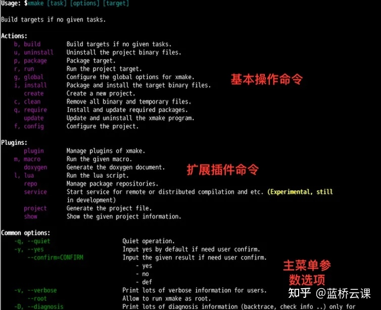
config/f：配置编译需要的参数，比如平台、架构等。global/g：全局配置编译参数。build/b：构建程序。run/r：运行目标程序。install/i：安装编译后的目标程序。uninstall/u：卸载之前安装的程序文件。package/p：打包编译生成的库和头文件。clean/c：清理编译过程中生成的临时文件。require/q：手动拉取第三方依赖库。update：xmake 程序自更新。
2.build 子命令
build 子命令也就是默认的构建命令，由于这个命令最常用，因此即使用户不完整运行 xmake build，仅仅执行 xmake 就可以编译项目，两者是完全等价的。
如果我们要查看构建命令具体有哪些参数选项，可以执行下面的命令来查看，参数列表如下：
xmake build --help
输出内容如下：
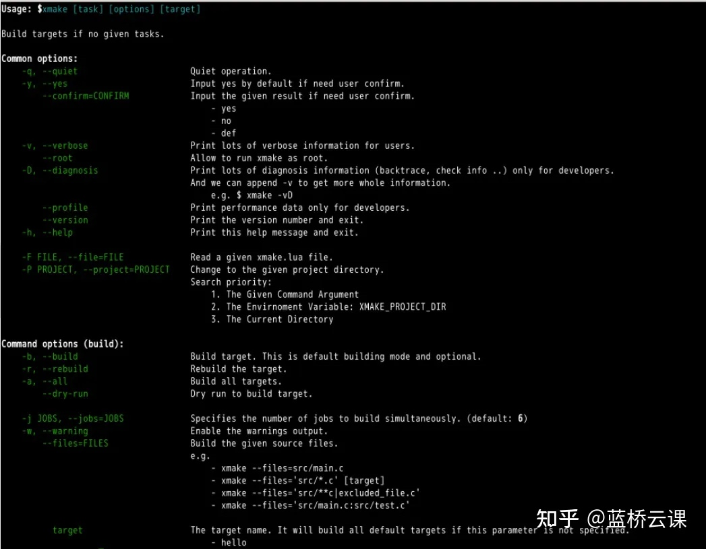
-v/--verbose：查看详细完整的编译命令。-r/--rebuild：强制重新编译所有代码。-j/--jobs：指定多任务编译的并行任务数。-w/--warning：编译过程中显示编译警告信息。
3.查看详细编译选项
通过添加 -v 参数，在编译过程中，查看完整的编译选项，这是非常有用的。
它可以排查和确认设置的编译选项是否生效，我们可以进入之前的 hello 项目中执行下面的命令。
xmake -rv
这里我们还同时追加-r选项，-r和-v可以组合在一起变成-rv同时生效（这是由于 xmake 采用的是 unix 的命令参数风格），也就是重新编译并且显示详细命令输出，具体效果如图：
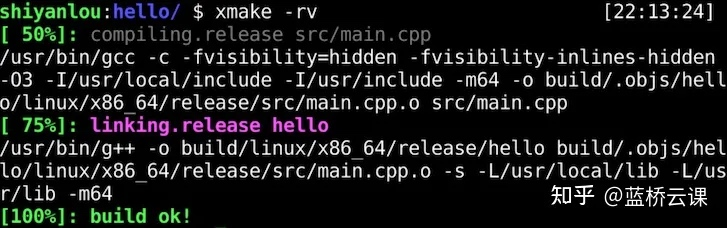
4.config 子命令
config 子命令主要用于在编译前，对项目进行一些参数配置，比如切换平台、架构以及编译模式等。
它可用于修改编译过程中的各种行为，当然里面很多配置是可以直接在 xmake.lua 中配置来永久生效的。不过这里通过配置命令，也可以针对当前编译临时生效，配置结果也会被缓存。
【注意】 每次的配置都是完整配置，会完全覆盖上一次的配置结果。
- 切换到调试编译模式
xmake f -m debug
需要提示的一点是，xmake f 是 xmake config 的简写，用来简化输入提高效率，其它子命令也都是有简写的，大家可以在帮助菜单中查看。
- 切换编译输出目录
默认编译 xmake 会在当前项目根目录下生成 build 子目录作为编译输出目录，如果不想生成到当前目录下，我们可以通过下面的配置命令切换到其它输出目录下：
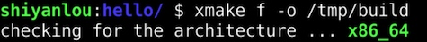
如果配置成功，通过下面的命令查看当前的配置信息，确认是否生效。
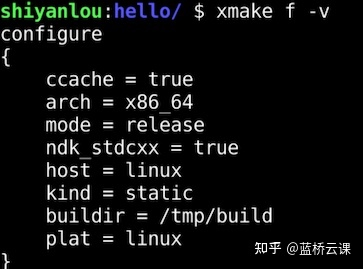
- 添加 C/C++ 编译选项
通过配置命令，我们可以在命令行中快速添加一些自定义的 C/C++ 编译选项，其中主要涉及这三个选项：
--cflags：仅仅添加 C 编译选项。
--cxxflags：仅仅添加 C++ 编译选项。
--cxflags：同时添加 C/C++ 编译选项。
如果你的项目中既有 C 代码，也有 C++ 代码，那么使用 --cxflags 来同时设置会更加方便，使用方式如下：
xmake f --cxflags="-DTEST"xmake -rv
我们通过执行 xmake -rv 强制重新编译并且显示详细输出，来确认是否添加生效，下图红框部分中的 -DTEST 说明我们添加的 TEST 宏定义确实传入了 gcc 编译器。
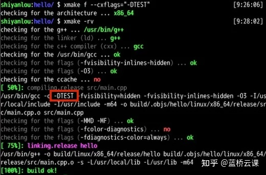
- 添加链接库和搜索路径
除了 C/C++ 代码编译，最后的链接器阶段的选项，我们也可以通过 --ldflags 命令参数添加设置，例如：
xmake f --ldflags="-L/tmp -lpthread"xmake -rv
通过添加额外的 pthread 链接库，同时新增了 /tmp 的库搜索目录，最后生效的效果如下：
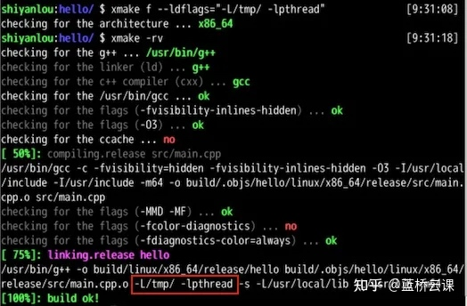
另外，我们也可以通过 --links 和 --linkdirs 达到同样的效果。
xmake f --links="pthread" --linkdirs="/tmp"xmake -rv
- 切换到 clang 编译器
默认情况下，在 Linux 环境中，xmake 会优先使用 gcc 编译器，不过我们也可以很方便地切换使用其它的编译器，比如 clang，不过在使用 clang 编译器之前，需要执行下面的命令安装它。
sudo apt update
sudo apt install -y clang
安装完成后，执行 clang --version 命令来确认 clang 是否安装成功。
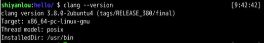
如果安装成功，执行下面的命令切换到 clang 编译工具链，然后执行编译。
xmake f --toolchain=clang
xmake -rv
- 重置所有配置
经过之前的一些配置，我们缓存了不少编译配置，如果想重置所有配置到最初的默认状态，那么可以添加 -c 选项来重置所有。
默认配置下，也就是 release 编译模式，会忽略本地的配置缓存，像之前的编译输出路径、新增的编译选项配置都会被忽略。
xmake f -c
xmake -rv
重置配置后，我们重新编译当前工程，可以看下里面的详细编译选项，已经完全还原回去了，刚刚设置的 clang 编译器重新变成了 gcc 编译器。
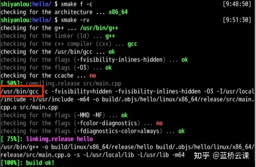
5.show 子命令
我们可以使用此命令，查看当前工程的基本信息，以及 xmake 自身的一些基本信息，这通常是非常有用的。
比如可以知道当前项目有哪些目标程序，当前的编译架构和模式是什么，以及 xmake 的临时目录、缓存目录和安装路径在哪里等。
xmake show
显示的一些信息如下图：
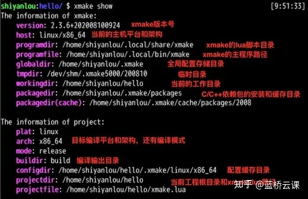
6.update 子命令
如果 xmake 有新版本发布，我们可以使用自更新命令快速更新版本，只需要执行下面的命令。
xmake update -f
这里我们额外加上了 -f/--force 参数，这是因为我们当前环境的 xmake 已经是最新版本，通常不需要更新，为了演示这个更新操作，我们通过这个参数来强制重新更新一遍当前的最新版本。
更新完成后，我们可以继续执行 xmake --version 确认下版本是否为最新版本，实际的版本号由于时间关系，会有所变动，毕竟 xmake 的版本迭代还是挺频繁的。
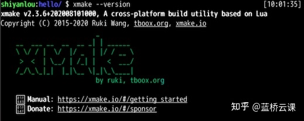